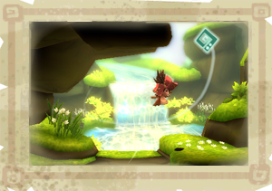

Lors de son exploration des ruines de la Cité de Melodia, Magdi, la mère de Toku, a disparu et les seuls indices pouvant conduire à l’endroit où elle se trouve sont cachés dans les restes endommagés de son précieux journal.
Pour les remercier de lui avoir sauvé la vie, l’ancien gardien Magmok promet d’apporter son aide à Toku et Enril dans leur voyage à travers la montagne pour retrouver Magdi.
Toku et Enril parviennent au village de Summer Falls, un site pittoresque frappé par un hiver éternel. Plus inquiétant encore, ses habitants vivent dans la peur des monstres féroces qui se dissimulent dans la neige.
Craignant le pire et menacés par un froid terrible, Toku et Enril demandent l’aide de Sonté, l’Esprit des saisons. La faculté de Sonté de changer les saisons pourra fournir l’explication du sombre destin frappant Summer Falls, mais aussi faire renaître une malédiction qui menaçait jadis la Cité de Melodia.
Tandis que Toku et Enril progressent, une course contre la montre est engagée pour sauver la vie de la mère de Toku, ainsi que l’avenir même de Mistralis...